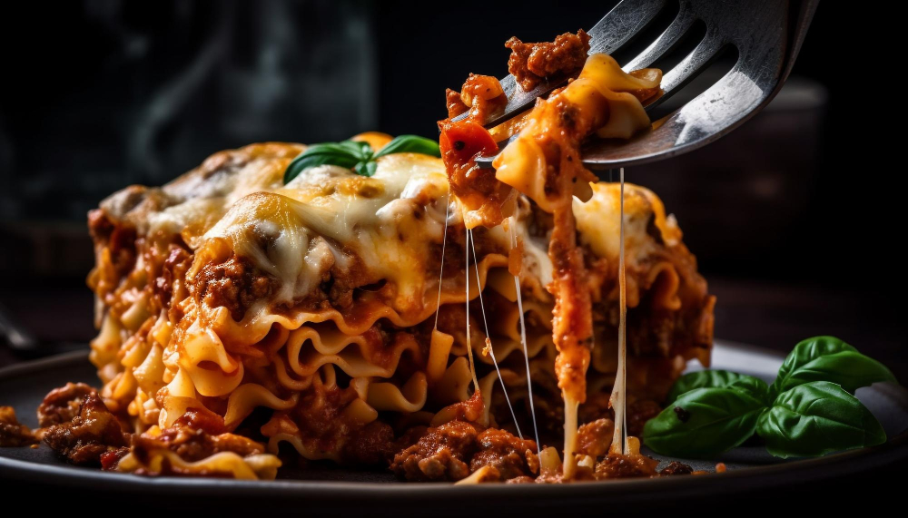

Home
Lasagna

Description
Lasagne is a layered Italian pasta dish made with sheets of pasta, rich meat or vegetable sauce, and creamy béchamel.
Each layer is baked to perfection, creating a balance of textures and flavors.
Topped with melted cheese, it’s hearty, comforting, and deeply satisfying.
Ingredients
- Meat: This super meaty lasagna has sweet Italian sausage and lean ground beef.
- Onion and garlic: An onion and two cloves of garlic are cooked with the meat to add tons of flavor.
- Tomato products>: You'll need a can of crushed tomatoes, two cans of tomato sauce, and two cans of tomato paste.
- Sugar>: Two tablespoons of white sugar add subtle sweetness and enhance the flavor of the sauce.
- Spices and seasonings>: This lasagna recipe is flavored with fresh parsley, dried basil leaves, salt, Italian seasoning, fennel seeds, and black pepper.
- Lasagna noodles: Use store-bought or homemade lasagna noodles.
- Cheeses: Parmesan, mozzarella, and ricotta cheese make this lasagna extra decadent.
- Egg: An egg helps bind the ricotta so it doesn't ooze out of the lasagna when you cut into it.
Steps
- How to make the lasagna
- Make the meat sauce
- Cook the noodles
- Make the ricotta mixture
- Layer the lasagna according to the recipe instructions
- Cover with foil and bake
- Let the lasagna rest before serving
- How to layer the lasagna
- Meat sauce
- Noodles
- Ricotta mixture
- Mozzarella slices
- Meat sauce
- Parmesan cheese
- Repeat the layers, then top with the remaining Parmesan